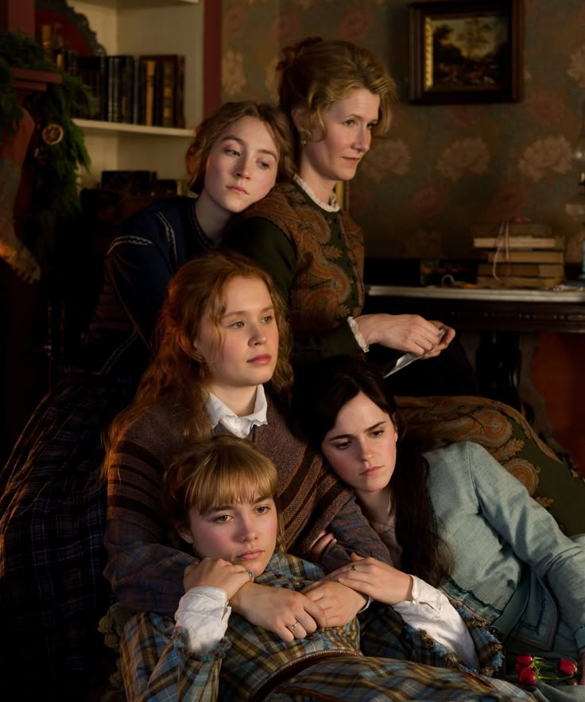

A reflection through the women of Little Women

Love is often mistaken for movement — longing, rushing, choosing, sacrificing. But in Little Women, Louisa May Alcott suggests something far quieter. Love is not only passion; it is stillness. It is the moment when a woman pauses and finally understands who she is.
Each March sister experiences love differently. And in each of their journeys, love does not simply excite them — it steadies them. It slows them down just enough to reveal their truth.
Meg begins with a longing for refinement, beauty, and the comfort of a life larger than her modest upbringing. She understands society and wishes to belong to it.
Her love for John Brooke is not dramatic. It does not rebel against the world. It is quiet, steady, almost ordinary. Yet in choosing him, Meg chooses something profound: contentment over luxury.
She struggles with pride, with money, with the echo of what might have been. But love becomes her grounding force. For Meg, stillness is not confinement — it is conscious acceptance. It is waking up each day and choosing the same gentle certainty.
Jo is fire. She is ambition, ink-stained fingers, restless dreaming. She fears that love may silence her before she has spoken fully into the world.
When she refuses Laurie, it is not absence of affection. It is preservation of identity. She knows that a love entered too soon could dissolve her becoming.
Later, with Professor Bhaer, love appears differently — patient, intellectual, steady. It challenges her writing, tempers her impulsiveness, and invites her to slow down.
For Jo, love is not surrender to another person. It is surrender to maturity. Her stillness comes only after she becomes whole on her own.
Beth embodies a softer truth. Her love is not romantic, yet it may be the purest form in the novel. She loves without demand, without performance, without noise.
Even in fragility, she remains gentle. Her presence teaches the family — and the reader — how to pause. How to sit in tenderness without needing spectacle.
In Beth, love is acceptance. It is the stillness that comes from knowing life is delicate and choosing kindness anyway.
Amy understands beauty, ambition, and social reality. She does not romanticize struggle. She knows that love without stability can erode affection over time.
Her marriage to Laurie is not a girlish fantasy fulfilled; it is a mature decision made after growth. Amy chooses a love that aligns with her identity, her standards, and her future.
For Amy, stillness comes from clarity. She does not chase love — she selects it.
What makes Little Women endure is that none of the sisters are punished for wanting love — but neither are they defined solely by it. Each woman must first understand herself before she can truly stand beside someone else.
Meg finds rhythm.
Jo finds partnership.
Beth embodies peace.
Amy finds alignment.
Stillness, then, is not boredom. It is emotional security. It is the absence of chaos within the self.
Perhaps that is the quiet lesson Alcott leaves us with: love should not make you smaller. It should make you steadier.